Your object-oriented library
Object technology is the software technology of the future. The books
listed here go beyond the hype and give you concrete, in-depth
information that will enable you to become a better software developer
or project manager.
All the books are available from technical bookstores everywhere,
and can also be ordered
directly from ISE.
The prices given are for
ordering from ISE.
Fast links
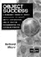
Object Success: A presentation of object technology
for managers.
|
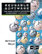
Reusable software: How to build good reusable libraries. The fundamental reference for the component revolution.
|
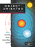
Object-Oriented Applications:
An in-depth description of seven successful O-O projects by their project
leaders.
|
Eiffel: The Language: The complete reference on Eiffel.
|
|
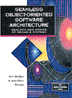
Seamless Object-Oriented Software Architecture , Waldén & Nerson: The reference on O-O analysis and design.
|
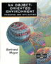
An Object-Oriented Environment: Principles and application of O-O development environments.
|

Eiffel: An Introduction
, Robert Switzer: A clear and readable introduction to the practice of O-O development.
|

Software Development Using Eiffel - There Can Be Life After C++ , Wiener: a presentation of systematic object technology particularly geared towards C++ programmers.
|
|
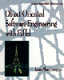
Object-Oriented Software Engineering with Eiffel, Jézéquel: A software engineering textbook using the best O-O principles and practices.
|
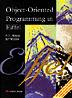
Object-Oriented Programming in Eiffel, Thomas & Ray Weedon: introductory programming textbook based on a fully-O-O approach.
|
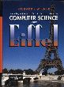
An Object-Oriented Introduction to Computer Science Using Eiffel, Wiener: A modern presentation using object technology.
|
Object-Oriented Programming in Eiffel
, Rist & Terwilliger: Introduction to programming using modern software engineering concepts.
|
|
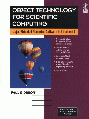
Object Technology for Scientific Computing,
Dubois: how to make scientific software benefit from the O-O method.
|
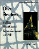
Object Structures: Building Object-Oriented Software Components, Gore: A modern introduction to data structures and algorithms, using O-O concepts.
|
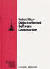
Object-Oriented Software Construction: The classic first edition, still available. See also second edition.
|
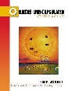
Objects Unencapsulated, Ian Joyner: An in-depth analysis of O-O languages from a software engineering perspective.
|
| |
Introduction to the Theory of Programming Languages: The most readable presentation of the theory behind programming.
|
An Eiffel Collection: Important papers about object technology.
|
Book details
"Object Success", Bertrand Meyer
| |
|
A concise and incisive presentation of the
business side of object technology. Meant specifically for
managers, the book focuses on the practical issues
facing any company that plans to use Object-Oriented Methods
to reengineer its software process. Provocative and irreverent,
it bypasses hype and ObjectSpeak and respects no sacred cow in
its drive to provide managers with concrete, no-nonsense tips
on how to get the full benefits of the method.
If you are a programmer, make sure your boss gets this book!
Prentice Hall 1995, 250 pages, ISBN 0-13-192833-3
Price: $ 50.00 -- Order here
|
"Object-Oriented Software Construction", first edition, Bertrand Meyer
| |
|
The best-selling introduction to object technology.
Integrates both design and implementation within the same
conceptual framework. Features:
descriptions of the software engineering issues that
justify the object-oriented approach; a detailed presentation
of the rationale behind Eiffel; and tips on implementing
object-oriented concepts in other languages and environments
including FORTRAN, Pascal, C, Ada, Modula-2, Simula 67,
Smalltalk and LISP. Also exists in Japanese, French, German,
Italian, Dutch etc.
Prentice Hall 1989, 480 pages, ISBN 0-13-629049-3
Price: $ 55.00 -- Order here
|
"Object-Oriented Applications", Bertrand Meyer and Jean-Marc Nerson (eds.)
| |
|
Written by a group of experienced project leaders of
successful O-O developments, this is the first book to study
actual OO projects in depth -- projects leading to both products
and class libraries. Technically detailed, it includes source
code extracts, specifications of important classes, system
structure diagrams, information about analysis/design methods
used, extracts from analysis and design results, and relevant
metrics. Each project was implemented in ISE Eiffel. This book
presents a detailed study of the activities involved, candidly
describing mistakes and pitfalls as well as successes. This
book is an excellent way to discover the scope of developments
that people have been doing with object technology and Eiffel.
Prentice Hall 1993, 600 pages, ISBN 0-13--13798-7.
Price: $ 62.00 -- Order here
|
"Eiffel: The Language", Bertrand Meyer
| |
|
Written by Eiffel's principal designer, this is the first book
to cover the language in full, incorporating new developments
in version 3. This book is suitable for novices as well as
advanced users and implementors.
Prentice Hall, second printing, 1992, 300 pages, ISBN 0-13-247925-7.
Price: $ 50.00 -- Order here
|
"Reusable Software: The Base Object-Oriented Component Libraries", Bertrand Meyer
| |
|
This fundamental reference on reusability marks one of the
first times that the software literature had given reuse
more than lip service. It provides its readers with
both components and expertise. The components (part of
ISE Eiffel) are reusable software modules which cover
some of the fundamental patterns of software development
across application areas; the expertise will help readers not
just to use these modules properly but also to develop
their own libraries and make sure they are successful. Also
describes the ISE EiffelBase library.
Prentice Hall 1994, 536 pages, ISBN 0-13-245499-8.
Price: $ 56.00 -- Order here
|
"An Object-Oriented Environment: Principles and Application", Bertrand Meyer
| |
|
This book explains what it means for an environment to be
truly object-oriented, not just by having a modern user
interface but by applying to its full extent the concept
of data abstraction. It shows the application of these concepts
to the ISE Eiffel graphical development environment, available
on most major industry platforms.
Prentice Hall 1994, 260 pages, ISBN 0-13-245507-2.
Price: $ 45.00 -- Order here
|
"Eiffel: An Introduction", Robert Switzer
| |
|
This primer is ideal for those with some knowledge of
computer programming who wants to learn Eiffel.
It focuses on the basic aspects of the language
that are necessary to produce software with Eiffel, and
discusses the problems of writing reusable software and
explains how Eiffel can help solve them.
Prentice Hall 1993, 176 pages, ISBN 0-13-105909-2.
Price: $ 38.00 -- Order here
|
"Seamless Object-Oriented Software Architecture - Analysis and Design of Reliable Systems",
Kim Waldén and
Jean-Marc Nerson
| |
|
The authors focus on the Business Object Notation (BON) method,
which contains concepts and corresponding notions that permit
optimal object-oriented modeling. The book explains how to
make seamlessness, reversibility and contracting part of your
OO applications. It includes both detailed case studies and a
range of exercises.
Prentice Hall 1994, 302 pages, ISBN 0-13-031303-3
Price: $ 55.00 -- Order here
Of related interest: ISE's EiffelCase
analysis & design workbench implements the principles of this book
and the BON method.
|
"An Eiffel Collection", Bertrand Meyer
| |
|
A collection of papers about Eiffel and related issues;
some of these papers are otherwise quite hard to find.
ISE Technical Report TR-EI-20/EC, 233 pages
Price: $ 30.00 -- Order here
|
"Object-Oriented Programming in Eiffel", Pete Thomas and Ray Weedon
| |
|
Eiffel has long had strong support from the object-oriented
programming community as an OOP language that lends itself to
the creation of reusable software components. This tutorial
and guide introduces object-oriented programming with Eiffel,
with particular focus on data abstractions and design by
contract.
Addison Wesley 1995, 536 pages, ISBN 0-201-59387-4
Price: $ 50.00 -- Order here
|
"Software Development Using Eiffel - There Can Be
Life After C++", Richard Wiener
| |
|
The first seven chapters present the latest version of Eiffel
and compare it to C++. The remaining four chapters feature
the use of the BOOCH 94 approach to object analysis and design
with complete Eiffel implementations. Four case studies are
presented that include a detailed discussion of analysis and
design supported by Booch class and object-scenario diagrams
and Eiffel implementation.
Prentice Hall 1995, 350 pages, ISBN 0-13-100686-X
Price: $ 45.00 -- Order here
|
"Object-Oriented Programming in Eiffel", Robert Rist and Robert Terwilliger
| |
|
This book provides a clear introduction to the Eiffel
programming language. The text covers the language, logical
assertions, and design of object-oriented systems, making it
ideal for the new programmer or those unfamiliar with object-
oriented programming.
Prentice Hall 1995, 480 pages, ISBN 0-13-205931-2
Price: $ 55.00 -- Order here
|
"Object Structures: Building Object-Oriented Software Components", Jacob Gore
| |
|
This thoroughly object-oriented book takes the conventional topic of data
structures and totally transforms it, leading you through the process of
designing software components that are elegant, interchangeable, and
reussable. Using Eiffel, the only pure object-oriented language
designed specifically for software engineering, the book will teach you
techniques for designing object structure interfaces and inheritance
hierarchies. You will find detailed analyses of all the familiar data
structures - arrays, lists, queues, stacks trees, etc. - but the emphasis
is on abstracting these structures to create well-designed, reusable
components.
Addison Wesley
("Eiffel in Practice" series) 1996, 468 pages, ISBN 0-201-63480-5
(soft cover)
Price: $ 50.00 -- Order here
|
"Object-Oriented Software Engineering with Eiffel", Jean-Marc Jézéquel
|
|
|
An indispensable resource for anyone working with Eiffel, this up-to-date
guide provides full coverage of the most recent version of the language,
focusing on Eiffel's practical use in the development of large,
mission-critical systems. In addition to a comprehensive description of
Eiffel's syntax and semantics, you will find in-depth information on style
guides, analysis and design, design patterns, and validation and testing.
Descriptions and comparisons of available compilers and libraries will help
you decide which Eiffel tools best fit your development needs. The book
even includes an Eiffel resource guide. The book's most notable feature is
its three large-scale case studies that demonstrate Eiffel in action,
illustrating implementation techniques and showcasing Eiffel's power and
effective ness in three different realms: the MIS world, the embedded
systems/telecommunications world, and the numeric world.
Addison Wesley
("Eiffel in Practice" series), 340 pages, ISBN 0-201-63381-7 (soft cover)
Price: $ 45.00 -- Order here
This book also has an
official home page.
|
"An Object-Oriented Introduction to
Computer Science Using Eiffel", Richard Wiener
| |
|
Richard Wiener offers a holistic introductory approach to
computer science that starts with modeling concepts and gets
students up to speed on functions from the outset. Within a
few weeks, they are writing real codes to solve real problems
and learning analytical methods that will serve them
throughout their careers. Eiffel is the ideal teaching tool
for this subject because it is completely object-oriented,
consistent, and clean. In addition to a very simple syntax, it
offers a rich environment for programming with objects. Whether
students continue to work with Eiffel, or simply use it as a
launch pad for learning about other languages and systems, An
Object-Oriented Introduction to Computer Science Using Eiffel
sets them on the road to becoming not just programmers but
computer scientists.
Prentice Hall 1996, 378 pages, ISBN 0-13-183872-5
Price: $ 55.00 -- Order here
|
"Objects UnencapsulatedL Java, Eiffel and C++?", Ian Joyner
| |
|
By analyzing and comparing three different object-oriented languages,
Objects Unencapsulated probes the core of object
technology to examine how various language features
affect software productivity. Objects Unencapsulated
examines and compares the strengths and weaknesses of
Java, Eiffel, and C++. Topics covered include:
Objects, classes, modules, and types.;
Features and interfaces;
Inheritance and genericity;
Concurrency and garbage collection.
Grounded by his belief that true innovation demands
constant re-evaluation, Ian Joyner strips away the
superficial distinctions between these languages to
find the essence of object-oriented programming. He
explains the facts behind the many controversies that
an object-oriented practitioner constantly faces.
Ian Joyner is a member of the Object Technology Group
at the Microsoft Research Institute at Macquarie
University in Australia. He has been practicing
and critiquing object-oriented software since 1979.
Prentice Hall 1999, 416 pages, ISBN 0-13-014269-7
Price: $ 50.00 -- Order here
This book also has an
official home page.
|
"Object Technology for Scientific
Computing -- Object-Oriented Numerical Software in Eiffel and C", Paul Dubois
| |
|
Object Technology for Scientific Computing explains in
detail how to apply object technology to the development of
numerical software to numerical computation, increasingly important
in areas such as physics and mathematics as well as banking and
other financial applications. Paul Dubois describes the power of
the Eiffel method when applied to numerical software. He describes
the design of the EiffelMath
library, based on the NAG library and taking full advantage of O-O
constructs. He also discusses in detail how to interface Eiffel
software with Fortran, C and C++ programs.
Prentice Hall 1996, 378 pages, ISBN 0-13-518861-X or 0-13-267808-X
Price: $ 45.00 -- Order here
|
Introduction to the Theory of Programming Languages
, Bertrand Meyer
| |
|
Understanding programming and programming languages requires
mastering the underlying theoretical models. This book
explores the main methods for describing programming language
syntax and semantics, with particular emphasis on abstract
syntax, axiomatic semantics and denotational semantics. It
demonstrates the complementarity between axiomatic and
denotational methods.
The presentation will be useful to software engineers as well
as to computer science students. All mathematical concepts
are explained in the text: the discussion constantly stresses
applications to practical programming problems.
Prentice Hall 1991, 447 pp., cloth, ISBN 0-13-498510-9
Price: $62.00 -- Order here
|
|
{kind=link}
{kind=link}
{kind=link}